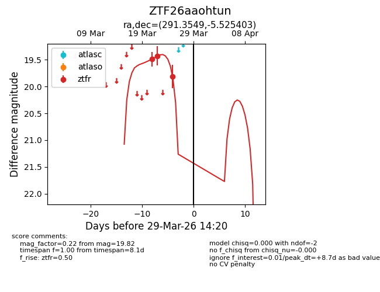
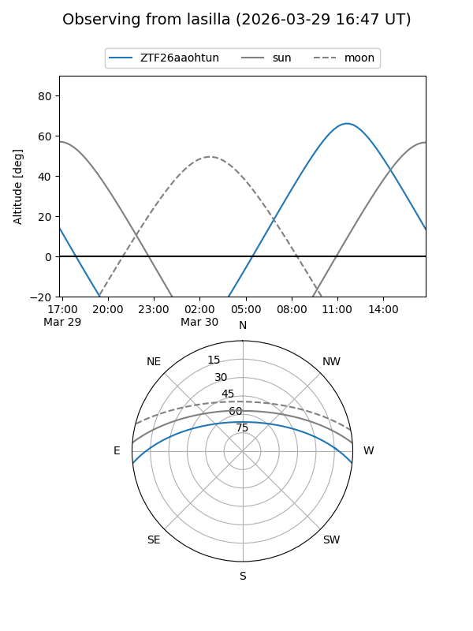
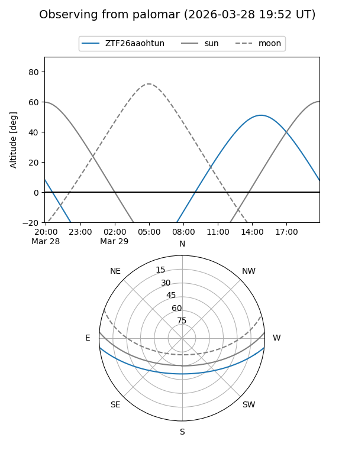
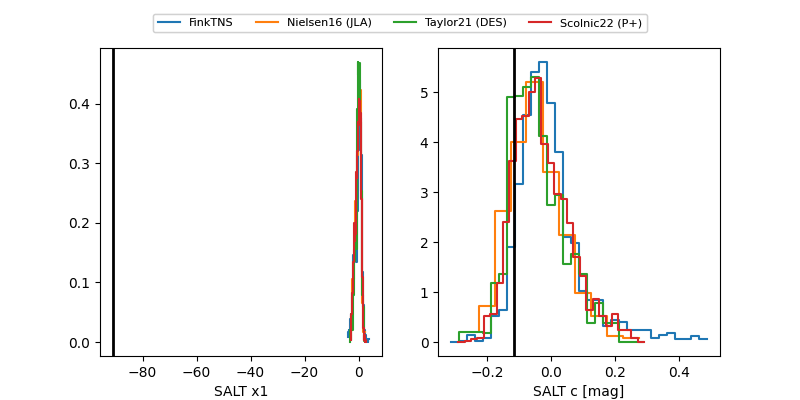

ZTF26aaohtun
Target ZTF26aaohtun at 2026-03-29 14:23
Aliases and brokers:
FINK: link
Lasair: link
ALeRCE: link
alt names
ZTF26aaohtun (ztf,fink_ztf)
Coordinates:
equatorial (ra, dec) = 291.3549,-5.52540
equatorial (HMS+DMS) = 19:25:25.18,-05:31:31.45
galactic (l, b) = (31.8469,-10.06544)
Flags:
Photometry:
last ztfr=19.82
3 ztfr detections
Lightcurve

Visibility


Additional plots
